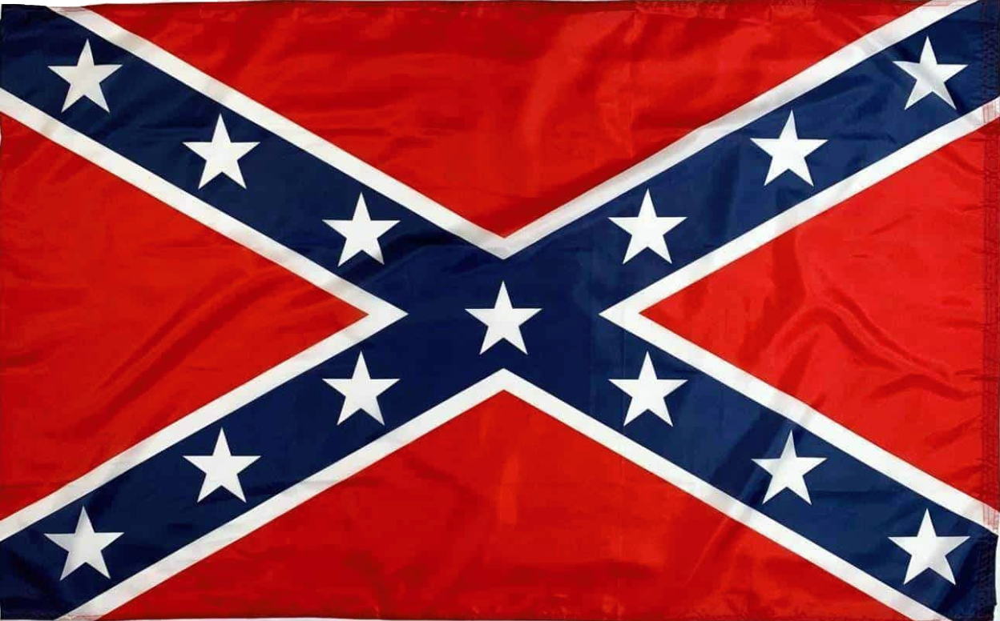
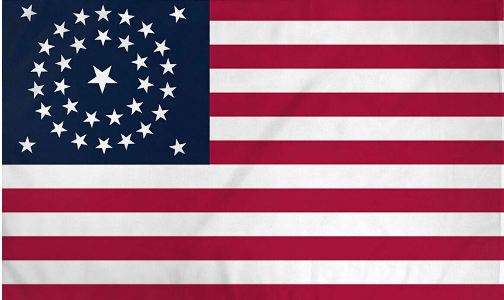

Battle of Gettysburg
Research Report
Who: The Battle of Gettysburg involved the Union Army of the Potomac, commanded by Major General George G. Meade, and the Confederate Army of Northern Virginia, led by General Robert E. Lee.
What: This battle was one of the largest and most significant engagements of the American Civil War. It resulted in a crucial victory for the Union forces, stopping Lee's invasion of the North.
When: The battle took place over three days, from July 1 to July 3, 1863.
Where: The battle occurred in and around the town of Gettysburg, Pennsylvania.
Why: General Lee aimed to invade the North to gather supplies, relieve pressure on the Southern states, and potentially influence Northern politicians to negotiate for peace. The battle was crucial because it marked the turning point in the Civil War, with the Union forces gaining a decisive victory.
How: The Battle of Gettysburg unfolded in several key phases:
- Day 1: Confederate forces attacked Union cavalry and infantry positions northwest of Gettysburg, pushing Union forces back through the town to the high ground south of Gettysburg.
- Day 2: The Confederates attacked Union positions on both flanks. The Union left flank held strong at Little Round Top, while the right flank also repelled Confederate assaults at Culp's Hill and Cemetery Hill.
- Day 3: The battle culminated in Pickett's Charge, a massive Confederate assault on the Union center at Cemetery Ridge, which was repulsed with heavy casualties.
Diorama
Confederate States of America Flag
United States of America Flag
Conclusion
The Battle of Gettysburg was a turning point in the Civil War, marking the beginning of the decline for the Confederate forces. It demonstrated the strategic importance of terrain and the high human cost of the war. The Union's victory here boosted Northern morale and strengthened their resolve to continue the fight.
In addition to its military significance, the Battle of Gettysburg had profound emotional and symbolic importance. The enormous loss of life and the bravery displayed by soldiers on both sides made Gettysburg a symbol of sacrifice and a crucial moment in American history. President Abraham Lincoln's Gettysburg Address, delivered later that year, further cemented the battle's legacy as a turning point in the fight for the preservation of the Union and the principle of human equality.
The aftermath of the battle also saw the establishment of the Gettysburg National Cemetery, where President Lincoln delivered his famous address. The cemetery stands as a testament to the lives lost and the enduring legacy of the battle in shaping the nation's history.
Bibliography
- Sears, Stephen W. The Battle of Gettysburg. New York: Houghton Mifflin, 2003.
- National Park Service. "The Battle of Gettysburg." Accessed May 15, 2024. https://www.nps.gov/gett/index.htm.
- Civil War Trust. "Gettysburg." Accessed May 15, 2024. https://www.battlefields.org/learn/civil-war/battles/gettysburg.
- Primary Sources: Letters from soldiers and contemporary newspaper accounts from July 1863.